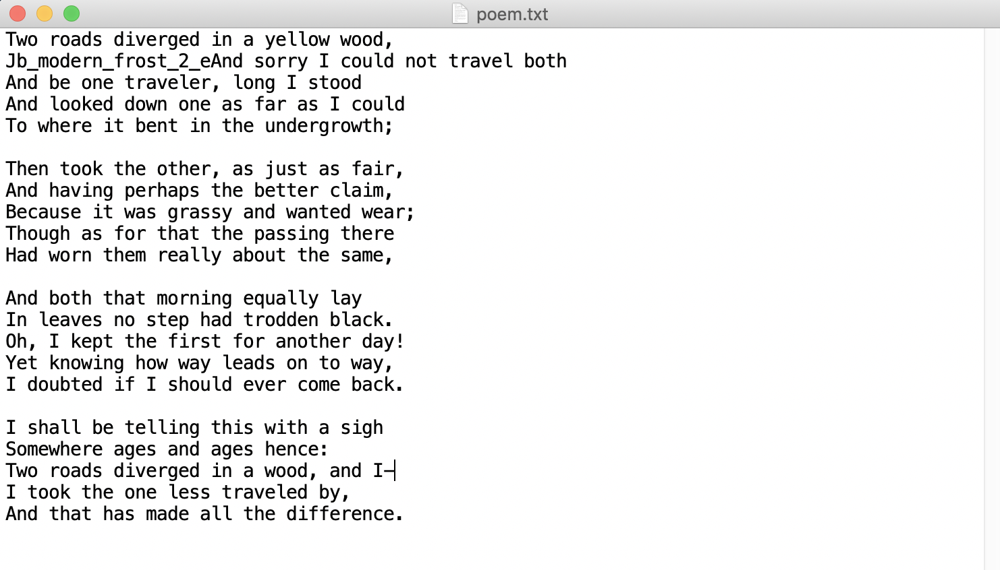
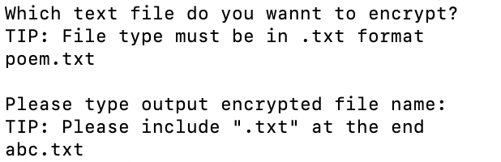
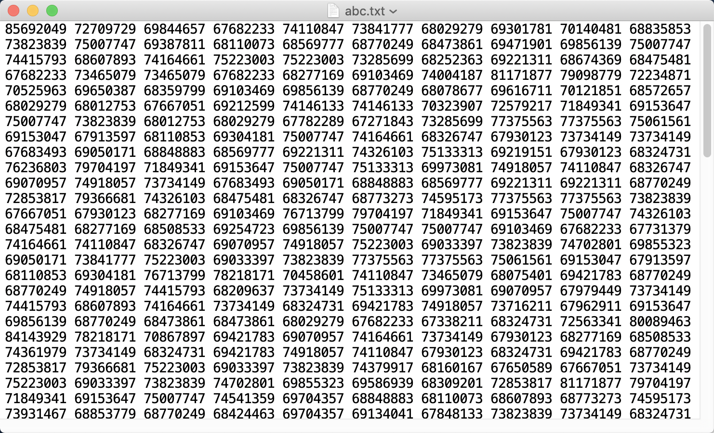

A simple encryption and decryption algorithm in python
Background
The idea of the code was inspired by a Google Code Jam competition question in 2019 which is called “Cryptopangrams”. Using the feature of prime numbers to encode and decode the text. Let’s get straight to the code!
Brief Explanation
The main idea is to map the prime number to the ASCII table. Each prime number represents a character. According to the feature that the if you factorise the product of two prime numbers, it can only be the two prime number themselves, which means the there is only one result. Then we can chain up all the text by multiply the numbers next to each other. Finally, a sequence of numbers is the encoded ciphertext.
Python3
encoder
import random
#encryption the code according to this random number
ran = random.randint(6666,9999)
#Find all the prime numbers less than or equal to the input number
#INPUT: maximum -- a random integer
#OUTPUT: primes -- the largest 200 primes less than or equal to the input
def findPrime(maximum):
primes = []
count = 1
#find primes from the largest to the smallest
for i in range(maximum+1, 2, -1):
isPrime = True
for j in range(2, i//2+1):
if i%j == 0:
isPrime = False
break
if isPrime:
primes.append(i)
if(count == 128):
return primes
count += 1
return primes
keys = findPrime(ran)
#generate mapping for ascii table
d = {}
#mapping
for i in range(128):
d.update({i : keys[i]})
#Decode the encrypted text
#INPUT: plainText -- the decrypted text
#OUTPUT: ciphertext -- the encrypted text
def encode(plainText):
if plainText == "":
return ""
#convert string to a list of chars
charlist = list(plainText)
#the first number is the largest key's square
ciphertext = str(keys[0] ** 2)
#the second number is the square of the key of the first letter
ciphertext = ciphertext + " " + str(d.get(ord(charlist[0])) ** 2)
for i in range(len(charlist)-1):
ciphertext = ciphertext + " " + str(d.get(ord(charlist[i])) * d.get(ord(charlist[i+1])))
return ciphertext
#read file
print("Which text file do you wannt to encrypt?")
print("TIP: File type must be in .txt format")
choose = True
while(choose == True):
try:
filename = input()
with open(filename, 'r') as rfile:
data = rfile.read()
rfile.close()
choose = False
except IOError:
print("Read File error, Please retry\n")
#write file
print("\nPlease type output encrypted file name:")
print("TIP: Please include \".txt\" at the end")
choose = True
while(choose == True):
try:
filename = input()
with open(filename, 'w+') as rfile:
rfile.write(encode(str(data)))
print("data has been successfully encoded")
choose = False
except IOError:
print("Write File error, Please retry\n")
decoder
import sys
#Find all the prime numbers less than or equal to the input number
#INPUT: maximum -- a random integer
#OUTPUT: primes -- the largest 200 primes less than or equal to the input
def findPrime(maximum):
primes = []
count = 1
#find primes from the largest to the smallest
for i in range(maximum+1, 2, -1):
isPrime = True
for j in range(2, i//2+1):
if i%j == 0:
isPrime = False
break
if isPrime:
primes.append(i)
if(count == 128):
return primes
count += 1
return primes
#Decode the encrypted text
#INPUT: ciphertext -- the encrypted text
#OUTPUT: plainText -- the decrypted text
def decode(ciphertext):
if ciphertext == "":
return ""
plainText = ""
splited_text = ciphertext.split(" ")
try:
map_key = int(int(splited_text[0]) ** 0.5)
except Exception as Exc:
print("Error: Wrong file content, cannot be decoded!!")
print("Terminating program!! and destory file content!!")
sys.exit()
keys = findPrime(map_key)
try:
firstLetter_key = int(int(splited_text[1]) ** 0.5)
except Exception as Exc:
print("Error: Wrong file content, cannot be decoded!!")
print("Terminating program!! and destory file content!!")
sys.exit()
#generate mapping for ascii table
d = {}
#mapping
for i in range(128):
d.update({keys[i] : i})
plainText = plainText + str(chr(d.get(firstLetter_key)))
currentLetter_key = firstLetter_key
for i in range(2, len(splited_text)):
try:
nextletter_key = int(splited_text[i]) // currentLetter_key
except Exception as Exc:
print("Error: Wrong file content, cannot be decoded!!")
print("Terminating program!! and destory file content!!")
sys.exit()
plainText = plainText + str(chr(d.get(nextletter_key)))
currentLetter_key = nextletter_key
return plainText
#read file
print("Which text file do you wannt to decrypt?")
print("TIP: File type must be in .txt format")
choose = True
while(choose == True):
try:
filename = input()
with open(filename, 'r') as rfile:
data = rfile.read()
rfile.close()
choose = False
except IOError:
print("Read File error, Please retry\n")
#write file
print("\nPlease type output decrypted file name:")
print("TIP: Please include \".txt\" at the end")
choose = True
while(choose == True):
try:
filename = input()
with open(filename, 'w+') as rfile:
rfile.write(decode(data))
print("data has been successfully decoded")
choose = False
except IOError:
print("Write File error, Please retry\n")
Run Example
The text file to be encoded.

Run command “python3 encoder.py”

ciphertext:

Note
- The decoding process is the similar to the encoding process.
- A File can be encoded multiply times (of course, if you want to decode it, need to decode it the same times as you encode it)
- If the file to be decoded is in the wrong format (cannot be decoded), the original content will be deleted!!! (not very friendly!)
Download
Download encoder.py Download decoder.py